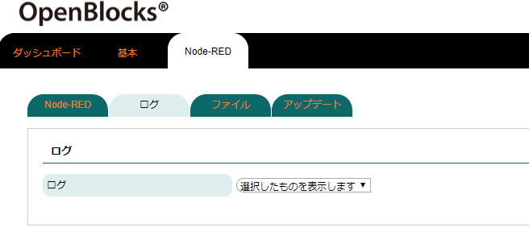
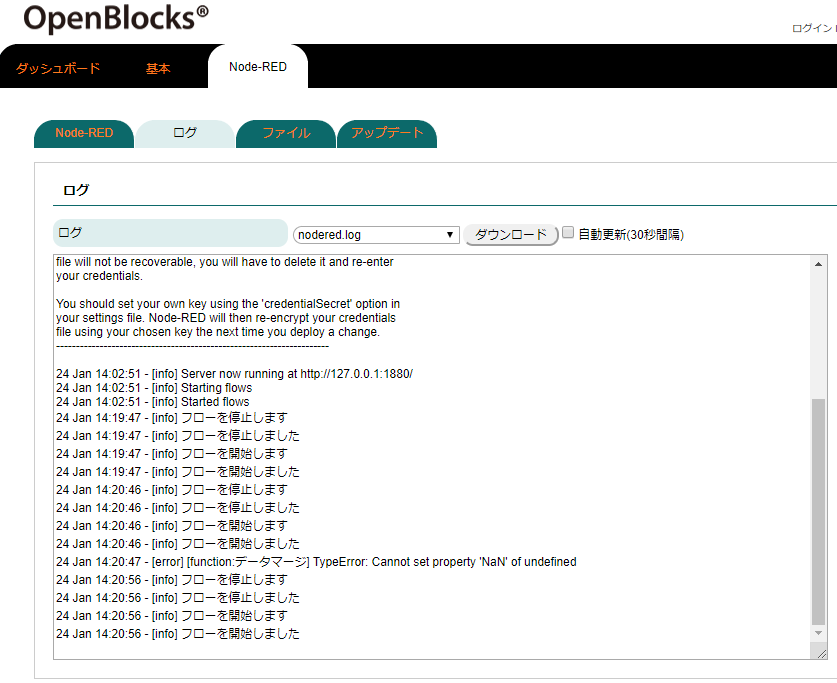
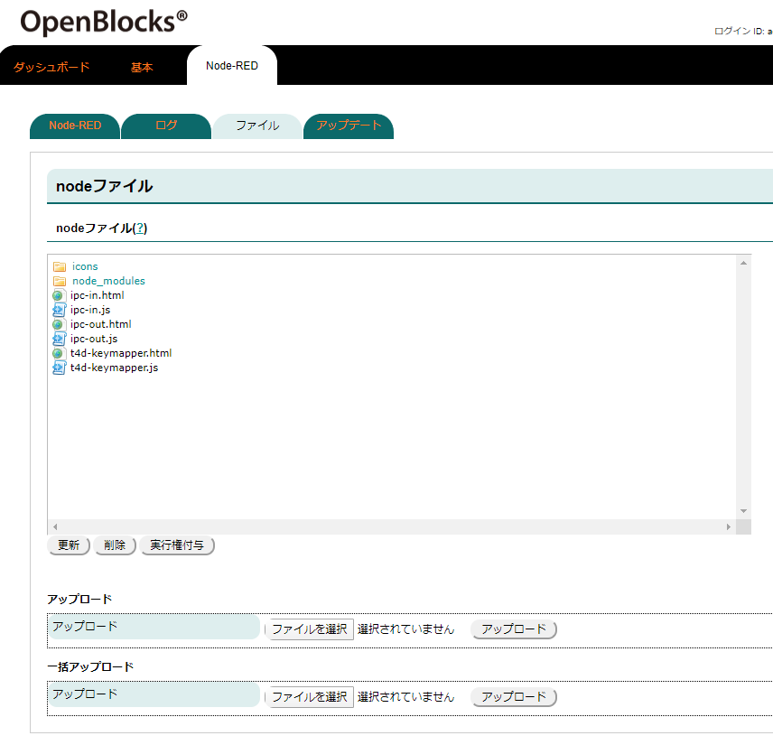
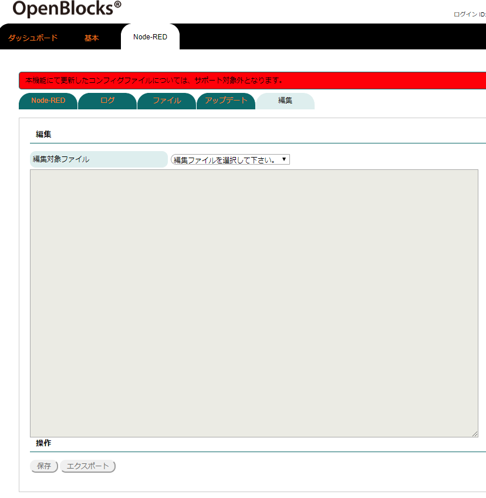
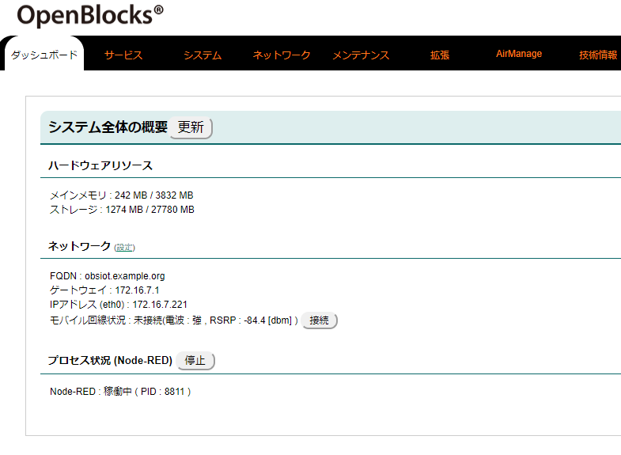
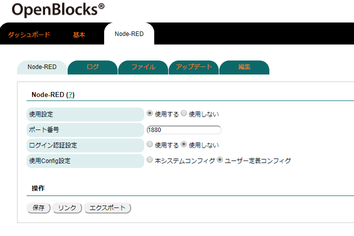
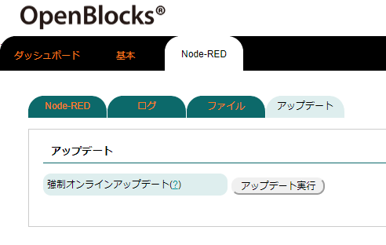
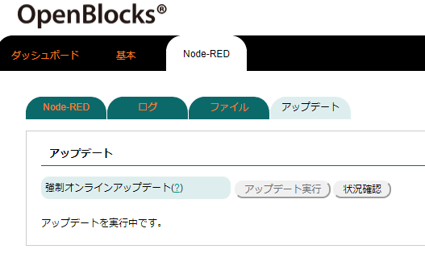
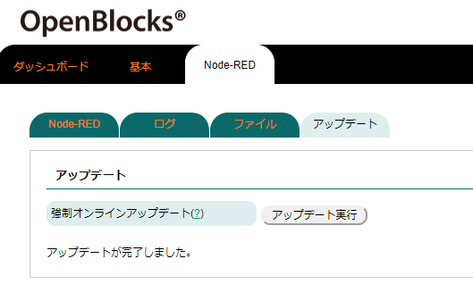

その他¶
Node-REDログについて¶
Node-RED自体のログについては、「Node-RED」→「ログ」タブから確認が行えます。

閲覧したいログファイルをログ欄から選択します。

ログファイルの選択を行うと、対象ログファイルの末尾が表示されます。
また、ダウンロードボタンを押すことによりログファイルのダウンロードが行えます。
Node-REDへのノード追加¶
Node-REDに対して対応するファイルをアップロードすることにより、Node-REDに対してノードを追加することができます。
ノード用のファイルアップロードは「Node-RED」→「ファイル」から行えます。尚、本機能でアップロードする箇所の機能については、多言語等の対応機能は含まれておりません。

nodeファイル |
|
|---|---|
項目 |
備考 |
アップロード |
Node-REDのアップロード用に単体のファイルをアップロードが行えます。 アップロードするファイルを選択後、対応するアップロードボタンを押してください。 |
一括アップロード |
Node-REDのアップロード用に複数のファイルをアップロードが行えます。複数のファイルをアップ ロードする場合、tar形式に圧縮したファイルを指定してください。 アップロードするファイルを選択後、対応するアップロードボタンを押してください。 |
アップロードしたノードファイルをNode-REDに反映させる場合には、Node-RED自体の再起動が必要となります。後述のダッシュボードからプロセスの再起動を推奨します。
Node-REDのノードの作成方法については以下を参照してください。
https://nodered.jp/docs/creating-nodes/first-node
また、本項によるノード追加の場合、ノードの公開は行われないためpackage.jsonの作成等は不要です。
尚、フォーマットエラー等のファイル(html及びjsファイル)をアップロードした場合、読み込みがスキップされ、対象ノードは表示されません。
Node-REDのConfig編集¶
「Node-RED」タブにて使用Config設定にてユーザー定義コンフィグを選択している場合、「編集」タブが表示されます。
この「編集」タブからNode-RED自体のコンフィグ情報を編集できます。

編集 |
|
|---|---|
項目 |
備考 |
編集対象ファイル |
"setting.js"を選択してください。 ファイルを選択した段階で、現状使用するコンフィグファイルの内容がロードされます。 最終保存時のユーザーコンフィグを読み込みたい場合は、「Load(ユーザーコンフィグ)」ボタンを 押してください。 また、システム作成のコンフィグを読み込みたい場合は、「Load(システムコンフィグ)」ボタンを 押してください。 ※本項目の編集については十二分に理解がある方を前提としています。 |
コンフィグファイルの編集後、保存ボタンを押すことにより反映されます。
また、編集中のコンフィグファイルの内容をエクスポートボタンを押すことで保存することが可能です。
Node-REDのプロセス状況について¶
Node-REDを使用設定にしている場合、ダッシュボードにてNode-RED自体のプロセス状況を確認することができます。
プロセス状況に応じて、「起動」・「停止」・「初期化」ボタン等が表示されます。
「初期化」ボタンはNode-REDのフロー状況等が削除されますので、ご注意ください。

Node-REDのHTTPS化¶
Node-REDのダッシュボードへのアクセスは通常ではHTTP通信となります。
セキュリティ強化のためHTTPS通信へと変更を行いたい場合には、以下の方法を実施することで切り替え可能となります。
※HTTPS通信に切り替えた場合、WEB UIのNode-REDタブ内のリンクボタンからのリンクはHTTP前提となっている為、リンク切れが発生します。
1, 証明書の作成
本項では/var/tmpディレクトリ配下に自己署名証明書を作成しています。正式なものとして使用するには推奨いたしません。
# cd /var/tmp # openssl genrsa 2048 > privatekey.pem # openssl req -new -key privatekey.pem 2> /dev/null > server.csr <<! JP Tokyo ＜空行＞ ＜空行＞ ＜空行＞ ＜空行＞ ＜空行＞ ＜空行＞ ＜空行＞ ! # openssl x509 -days 365 -req -signkey privatekey.pem < server.csr 2> /dev/null > certificate.pem |
※＜空行＞は何も入力しないサンプルとなっております。実際には、各項目にあったパラメータを入力してください。
2, WEB UIのNode-REDタブ内の使用Config設定をユーザー定義コンフィグに設定し保存します。

3, Node-REDカテゴリの編集タブにてコンフィグを修正します。 編集対象ファイルをsetting.jsを選択し、テキストボックス内を変更します。 変更内容は”var fs”部のコメント解除及びhttpsディレクティブのコメント解除・パス修正となります。
変更前 |
|---|
// The https setting requires the fs module. Uncomment the following // to make it available: //var fs = require("fs");
|
変更後 |
|---|
// The https setting requires the fs module. Uncomment the following // to make it available: var fs = require("fs");
|
5, 変更完了後、保存ボタンを押すことでHTTPS化は完了となります。
Node-REDのバージョンアップ¶
インターネット接続環境の場合、Node-RED自体のアップデートを行う事が可能です。弊社で用意しているNode-RED及びNode-REDのモジュールのアップデートは、「Node-RED」→「アップデート」タブから確認が行えます。
 |
 |
 |
アップデート |
|
|---|---|
項目 |
備考 |
強制オンラインアップデート |
アップデート実行ボタンを押すことにより、オンラインアップデートが行われます。 アップデート処理中は状況確認ボタンにて、アップデートログが別ウィンドウにて表示可能です。 また、アップデートが完了すると完了の旨のポップアップが表示されますので、OKボタンを押して ください。 本機能はオンライン環境である必要がありますので、ご注意ください。また、Node-RED及びNode- REDモジュールについては各コントリビューターが用意しているものであるため、互換性が担保さ れているものではありません。そのため、事前に確認機等にてアップデート及び動作確認を推奨 いたします。 |